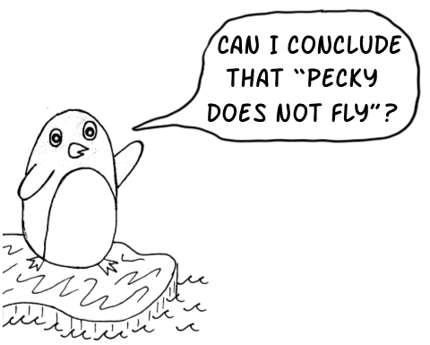
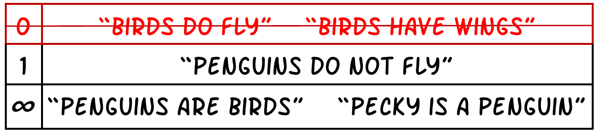
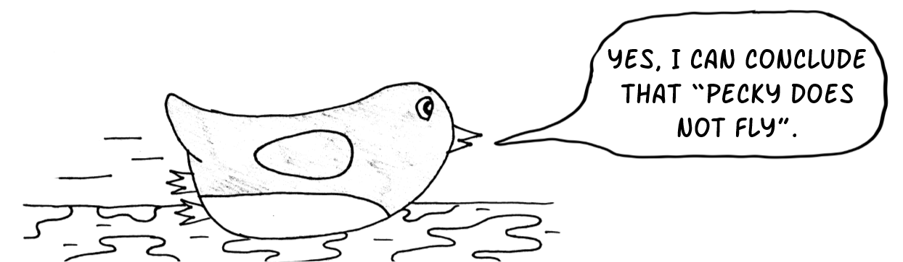

![Comic strip. Frame 1: Two penguins see birds flying; penguin 1 (Pecky) says 'Birds can fly and penguins are birds';
penguin 2 says 'So, penguins can fly'. Frame 2: Penguin 2 jumps off the cliff and cannot fly. Frame 3: Penguin 1 looks
down to the bottom of the cliff and remarks 'So, penguins cannot fly'; a textbox reads 'But, penguins are birds so they
must fly. So, penguins can and cannot fly, which is impossible. Sooo... no penguins exist!'. Frame 4: Penguin 1 disappears;
a textbox reads 'Moral of the story: Not all birds fly. Birds typically fly.'](images/playtupus.png)
Introduction
Knowledge representation and reasoning is a branch of Artifical Intelligence which uses logic to represent knowledge about the world. Automated reasoning methods are used to draw new conclusions from a set of known knowledge. Classical reasoning systems were traditionally used to draw conclusions from sets of statements. Classical reasoning systems are monotonic, which means that all information is certain and adding new information will not retract conclusions previously drawn.
For example, Perry the Platypus once used a classical reasoning system. While spending time with Phineas,
Perry learned that mammals give birth to live young. Given that they are a platypus and that platypuses are mammals,
Perry logically deduced that platypuses must give birth to live young as well. However, Ferb later informed
Perry that platypuses actually lay eggs. This contradiction confused Perry, as their reasoning system was
not flexible enough to accommodate the new information. Perry's dilemma illustrates a key weakness of classical
reasoning: it struggles to handle exceptions or conflicting data.

Defeasible (non-monotonic) reasoning systems would allow Perry to say "mammals typically give birth to live young". When Perry concludes that "platypus do not give birth to live young", the system would retract its previous conclusion that "platypus do give birth to live young". Perry would still exist if they used a "common sense" approach to reasoning.
Background
Propositional Logic
Propositional Logic uses symbols to represent basic
statements about the world that are assigned a value of true or false. Boolean operators are used to combine these
statements to form more complex statements.

Perry uses the symbols p, m and ly to represent platypus, mammals and liveyoung, respectively. Perry then combines
these symbols using boolean operators to make the statements "mammals have liveyoung", "platypus are mammals" and
"platypus do not have liveyoung".

Truth tables can be used to define the meaning of each boolean operator. And, those meanings are used to reason about propositional statements. Common questions asked are "What statements can we conclude to be true given the information known?". This is known as classical entailment.
 Using truth tables (or more efficient semantic tableau methods), Perry can still logically conclude that
"platypus can give birth to liveyoung". But, Perry already knows that "platypus do not give birth to liveyoung" and it is impossible for both
of these statements to be true. So, Perry does not exist. To solve this, Perry explored defeasible reasoning which minimcs common sense reasoning.
Using truth tables (or more efficient semantic tableau methods), Perry can still logically conclude that
"platypus can give birth to liveyoung". But, Perry already knows that "platypus do not give birth to liveyoung" and it is impossible for both
of these statements to be true. So, Perry does not exist. To solve this, Perry explored defeasible reasoning which minimcs common sense reasoning.
The KLM Approach
The KLM approach, proposed by Kraus, Lehmann and Magidor, is a well known approach to defeasible reasoning. It allows us to represent statements such as "mammals typically give birth to liveyoung" using a defeasible implication operator. Statements which use the defeasible operator as known as defeasible statements.
If Perry tries to conclude that a new defeasible statement is true based on previous statements, classical and defeasible, they can use defeasible entailment to determine the answer.

Defeaible entailment has been defined by many frameworks. The framework focused on in this project is Rational Closure.
Rational Closure
 Rational closure is the most simple and intuitive way of defining defeasible entailment. There is a semantic definition of Rational Closure and an equivalent algorithmic definition. For this project we use the algorithmic definition as the sole definition of Rational Closure.
This algorithm is split into two distinct sub-algorithms: Base Rank and Rational Closure. (A detailed, formal description of these algorithms is found in the full paper.) The Base Rank algorithm ranks all known statements according to typicality. Intuitively, more general statements will appear higher up in the ranking and more specific statements will appear lower down.
The Rational Closure algorithm uses the ranking of known statements to check whether we can conclude our the query statement from the known statements. When the left-hand side of our query statement is false, according to known statements, then the query statement is trivially true. So, we remove the least typical level in the ranking, since some of the statements in this level must be causing the left-hand side to be false.
When the left-hand side of our query statement is true, given the remaining ranked statements, then the query statement may be false. So, we need to check whether the query statement is true, given the remaining statements. If it is then we can conclude that it is true in our world; otherwise we conclude that the query is false.
Answer Set Programming
Answer Set Programming (ASP) is a declarative programming paradigm that uses logic to represent knowledge and solve problems. ASP programs are written in a logic-based language and are used to represent a set of rules and facts. The rules are used to define the problem and the facts are used to define the initial state of the problem. The ASP solver then uses these rules and facts to find a solution to the problem.
ASP is a non-monotonic logic programming paradigm, which means that the conclusions drawn from the rules and facts can be retracted if new information is added. This makes ASP a suitable candidate for defeasible reasoning.
The ASP solver uses a grounding process to convert the rules and facts into a propositional logic program. The solver then uses a search algorithm to find the answer sets of the program. An answer set is a set of facts that satisfy the rules of the program. The solver can then use these answer sets to find a solution to the problem.
The grounding process can be computationally expensive, especially for large programs. The solver must generate all possible combinations of the rules and facts to find the answer sets. This can be time-consuming and memory-intensive, especially for programs with a large number of rules and facts.
The ASP solver uses a search algorithm to find the answer sets of the program. The search algorithm uses a backtracking approach to explore the possible combinations of rules and facts. The solver starts with an empty set of facts and adds rules and facts to the set until it finds an answer set. If the solver cannot find an answer set, it backtracks and tries a different combination of rules and facts.
The ASP solver can use different search algorithms to find the answer sets of the program. The solver can use a depth-first search algorithm to explore the possible combinations of rules and facts. The solver can also use a conflict-driven clause learning algorithm to find the answer sets. The solver uses a conflict-driven clause learning algorithm to learn from the conflicts in the program and find the answer sets.
Example: The following is an example of an ASP program that represents a simple problem. The program defines a set of rules and facts that represent the problem. The solver uses these rules and facts to find the answer sets of the program.
% Rules
% If a platypus is a mammal, then it gives birth to live young.
mammal(X) :- platypus(X).
liveyoung(X) :- mammal(X).
% Platypus do not give birth to live young.
% Facts
% Perry is a platypus.
platypus(perry).
% Query
% Does Perry give birth to live young?
?- liveyoung(perry).
Objectives
The primary objective of the project is to extend KLM-style defeasible reasoning to Disjunctive Datalog. This is achieved by:
Defeasible Disjunctive Datalog
Conclusions
KLM-style defeasible reasoning can be extended to Disjunctive Datalog. In particular:
- The KLM properties can be extended to the Datalog case by using an extended version of the Datalog logic to express the properties. The extension retains the intended meaning of the original properties. (Joint work)
- The extended Rational Closure algorithm satisfies the KLM properties for Datalog. (Joint work)
- There is an extension of the Relevant Closure algorithm for Datalog. However, as found for the propositional case, the algorithm does not satisfy all of the KLM properties for Datalog. (Morris)
- The extended Lexicographic Closure algorithm satisfies the KLM properties for Datalog. (Ross)
Resources
For further project details, please see the following project documentation:
-
Matthew Morris
-
Tala Ross
-
Overall Project
Team
-
Matthew Morris
Author
-
Tala Ross
Author
-
Tommie Meyer
Supervisor